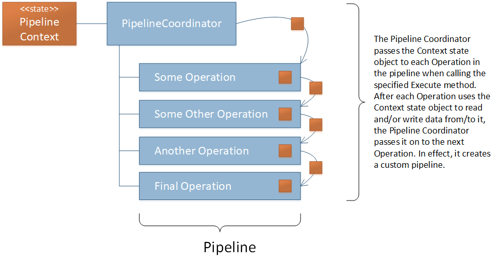
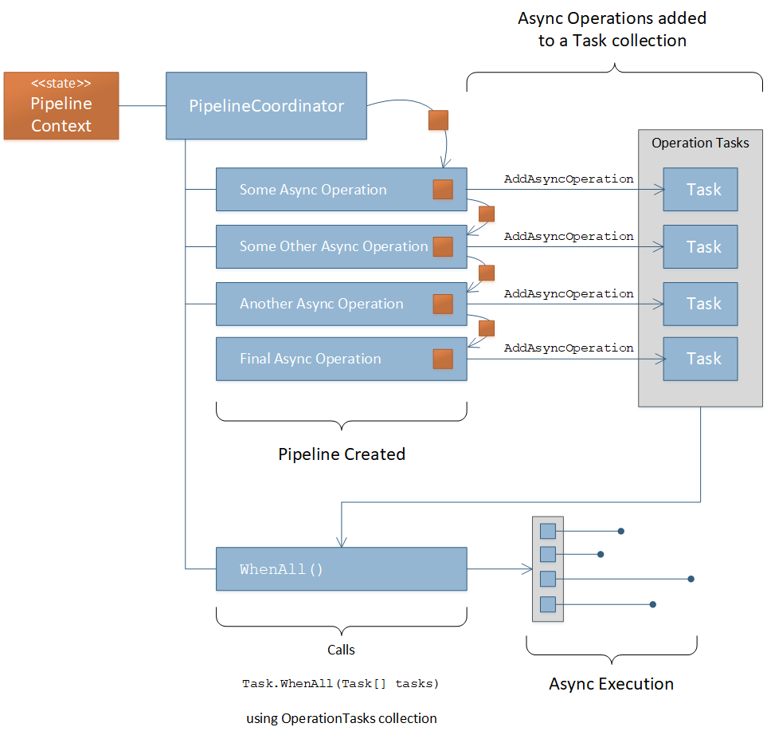

Pipeline Coordinator¶
The Pipeline Coordinator is the core of the Pipelines framework. It serves as the pipeline builder and the coordinator of the execution of Operations in the pipeline passing the Pipeline Context state object to each of the operations in the pipeline.
The Pipelines framework provides an abstract base implementation of the Pipeline Coordinator that must be implemented in order to use the framework. Steps to create a Pipeline Coordinator for an application are provided below as well as in the Quick Start instructions.
Ensure the application’s Pipeline Context class is created
Create a class that inherits from
BasePipelineCoordinator<TContext>Create a constructor that accepts two parameters of type
IReadOnlyDictionary<TKey, TValue>for the baseoperationsand the baseasyncOperationsconstructor parameters.Pass the constructor parameters to the base
Initialize the
Contextproperty in the body of the constructor method with an instance of your application’s Pipeline Context
The example below shows how this is done for a Pipeline Coordinator called MyPipelineCoordinator
1 2 3 4 5 6 7 8 9 10 11 12 13 14 15 | using System;
using System.Collection.Generic;
using KnightMoves.Pipelines;
using KnightMoves.Pipelines.Interfaces;
public class MyPipelineCoordinator : BasePipelineCoordinator<MyApplicationContext>
{
public MyPipelineCoordinator(
IReadOnlyDictionary<Type, IPipelineOperation<MyApplicationContext> operations,
IReadOnlyDictionary<Type, IPipelineOperationAsync<MyApplicationContext> asyncOperations
) : base(operations, asyncOperations)
{
Context = new MyApplicationContext();
}
}
|
Once the Pipeline Coordinator is created, it can execute Operations that are made to use the Pipeline Context specified
as the TContext by the application’s Pipeline Coordinator.
In the example above, MyPipelineCoordinator handles Operations that use a Pipeline Context state object of type
MyApplicationContext. Therefore, this Pipeline Coordinator can execute Operations of type IPipelineOperation<MyApplicationContext>
or Operations of type IPipelineOperationAsync<MyApplicationContext>.
Assuming the interfaces that identify the Operations below reference classes that implement IPipelineOperation<MyApplicationContext>
or IPipelineOperationAsync<MyApplicationContext>, then MyPipelineCoordinator can be used to coordinate the execution of those
Operations as shown below.
1 2 3 4 5 6 7 8 9 | // Here we injected type IPipelineCoordinator<MyApplicationContext> into the
// constructor and assigned it to _pipelineCoordinator. It will be of concrete
// type MyPipelineCoordinator based on sample code above.
_pipelineCoordinator
.ExecuteAsync<IGetCustomersBySegmentOperationAsync>()
.Execute<IValidateCustomersOperation>()
.ExecuteAsync<IFilterCustomersByPurchaseHistoryOperationAsync>()
.Execute<IMapCustomersToEmailCampaignOperation>();
|
The various operation execution methods are documented below.
Execute<TOperation>()¶
This method is used to execute Operations that are not asynchronous. This should be used for logic that does not benefit from asynchronous execution such as mathematical calculations that do not take long, validation logic that involves simple if/else tests that return a boolean, data transformations, etc.
Tip
If the logic of an Operation requires file IO, gets/posts from/to a REST API, network IO, reads/writes from/to a database, etc.
then the Operation should be asynchronous and executed using either ExecuteAsync<TOperation> or AddAsyncOperation<TOperation>
with WhenAll() methods to documented below.
to execute a non-async Operation using the Execute<TOperation> method, the logic of the Operation must be implemented in a class
that implements the IOperation<TContext> interface or better yet, inherits from BasePipelineOperation<TContext>, which
implements the IPipelineOperation<TContext> interface. Instructions for this are documented in the Operations page.
Once the Operation has been implemented, it can be identified by its marker interface and used by the Pipeline Coordinator for execution.
For example, if you create a class called SomeOperation, with a marker interface called ISomeOperation and the SomeOperation
class inherits from BasePipelineOperation<TContext> where TContext is the same type of Pipeline Context handled by the
Pipeline Coordinator, then it can be executed by the Pipeline Coordinator like this.
_pipelineCoordinator.Execute<ISomeOperation>();
Here is a diagram of a non-async pipeline of operations.
The diagram above depicts the code shown below.
1 2 3 4 5 6 | _pipelineCoordinator
.Execute<ISomeOperation>()
.Execute<ISomeOtherOperation>()
.Execute<IAnotherOperation>()
.Execute<IFinalOperation>()
;
|
The execution of asynchronous operations is documented below.
ExecuteAsync<TOperation>()¶
Most of what is documented above for the non-async Execute<TOperation>() method applies to the ExecuteAsync<TOperation>()
method with the following key difference.
The Operation that is executed by the
ExecuteAsync<TOperation>method must be a class that implements theIAsyncOperation<TContext>interface or inherit fromBasePipelineOperationAsync<TContext>
Everything else is the same.
Tip
It is recommended to name the Operation and its marker interface with the suffix “OperationAsync” or at least “Async” to show that it is an asynchronous operation but this naming convention is not enforced by the famework at all.
For example, if you create a class called SomeOperationAsync with a marker interface called ISomeOperationAsync and the
SomeOperationAsync class inherits from BasePipelineOperationAsync<TContext> where TContext is the same type of
Pipeline Context handled by the Pipeline Coordinator, then it can be executed by the Pipeline Coordinator like this.
_pipelineCoordinator.ExecuteAsync<ISomeOperationAsync();
Creating more Operations in the same fashion can be added to the pipeline with dot-chaining like so.
1 2 3 4 | _pipelineCoordinator
.ExecuteAsync<ISomeOperationAsync>()
.ExecuteAsync<ISomeOtherOperationAsync>()
;
|
Tip
Keep in mind that the ExecuteAsync<TOperation> method will execute the async Operation and await it so that other
operations that depend on it will not execute until it runs to completion. To execute async tasks in parallel you should
use the AddAsyncOperation<TOperation> / WhenAll() combination of method calls documented in the next section.
AddAsyncOperation<TOperation>()¶
If you create multiple async Operations that implement the IPipelineOperationAsync<TContext> interface or inherit from
BasePipelineOperationAsync<TContext> that can be executed simultaneously, you can do so by adding each async Operation to
the Pipeline Coordinator OperationTasks collection using the AddAsyncOperation<TContext> method to create a liste of
async Operations to be executed asynchronously. Once you have added all of the desired async Operations using this method, you
can execute all of them at once by calling the WhenAll() method.
The diagram below shows this flow of execution.
The diagram above depicts the code shown below.
1 2 3 4 5 6 7 8 9 10 11 12 13 14 15 16 17 | // The state object is in the _pipelineCoordinator.Context property
_pipelineCoordinator
// Add the operation tasks to the OperationTasks collection
.AddAsyncOperation<ISomeOperationAsync>()
.AddAsyncOperation<ISomeOtherOperationAsync>()
.AddAsyncOperation<IAnotherOperationAsync>()
.AddAsyncOperation<IFinalOperationAsync>()
// Execute the pending tasks asynchronously
.WhenAll()
;
// Do something with the results in the state object
return _pipelineCoordinator.Context.Stuff;
|
Mixing Execution Methods¶
Your pipeline of Operations may include a mix of non-async Operations, async Operations that must be awaited one at a time, and groups of async Operations that can be executed in parallel. The pipeline can be created in a way that mixes all of these approaches as shown in the code example below.
1 2 3 4 5 6 7 8 9 10 11 12 13 14 15 16 17 18 19 20 21 22 23 | // The state object is in the _pipelineCoordinator.Context property
_pipelineCoordinator
// These operations executed one at a time in order
.Execute<IPreliminaryOperation>()
.ExecuteAsync<ISomeFetchOperationAsync>()
// These tasks can be executed asynchronously
.AddAsyncOperation<ISomeOperationAsync>()
.AddAsyncOperation<ISomeOtherOperationAsync>()
.AddAsyncOperation<IAnotherOperationAsync>()
.AddAsyncOperation<IFinalOperationAsync>()
.WhenAll()
// Continue with other synchronous operations
.Execute<ICalculationOperation>()
.ExecuteAsync<ISomeSaveOperationAsync>()
;
// Do something with the results in the state object
return _pipelineCoordinator.Context.Stuff;
|